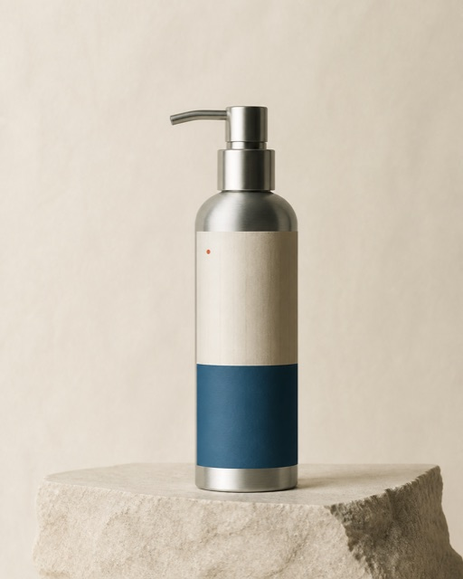
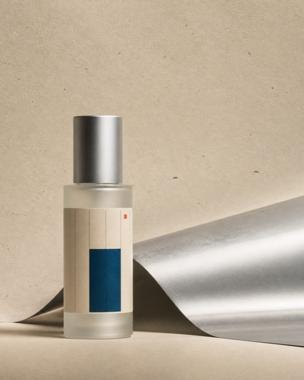
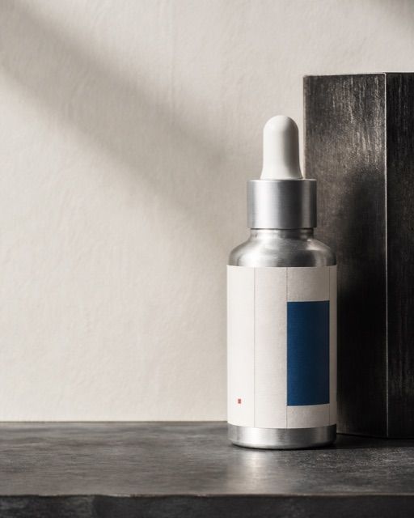
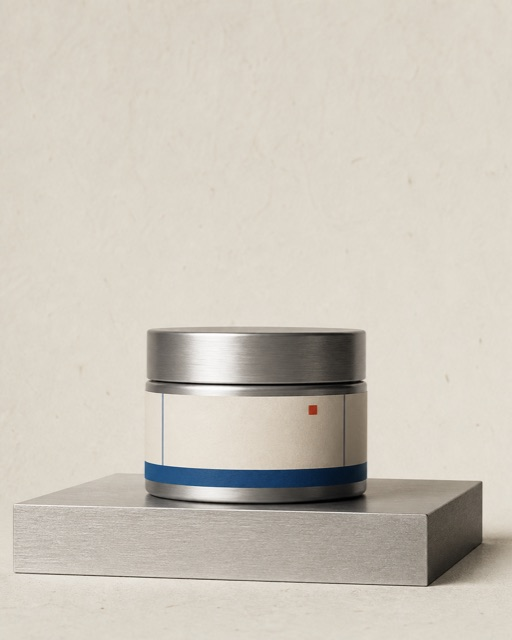
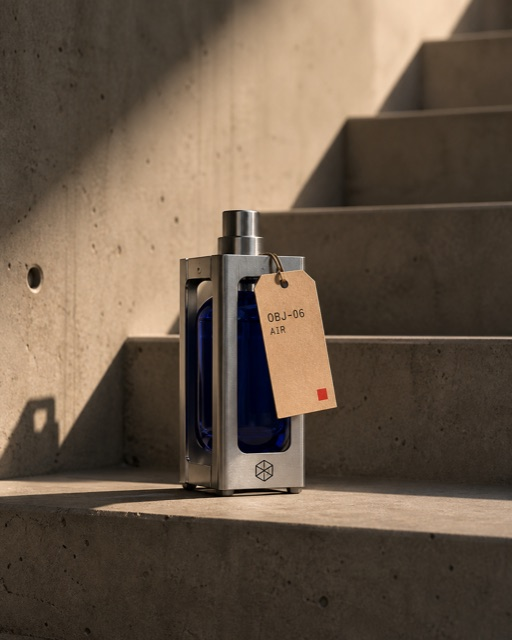
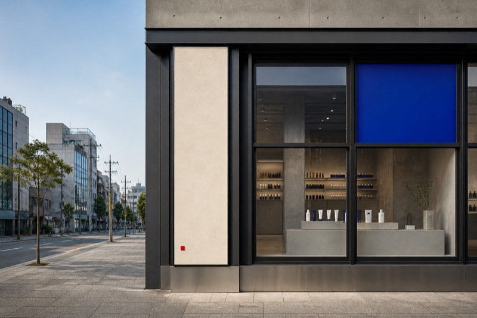
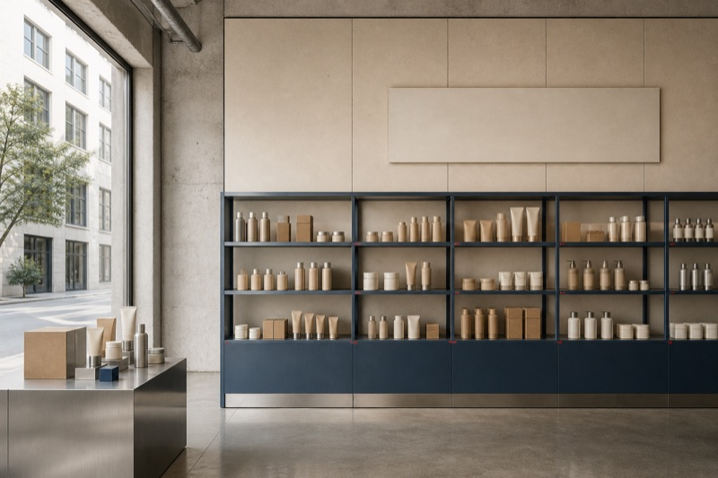
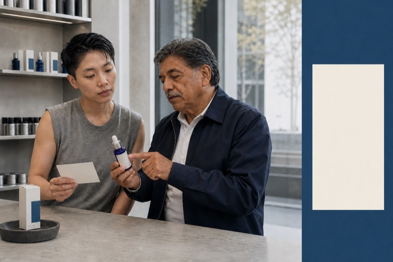

RINSE
제품명·역할은 합성 실험값 · 성분·효능 미확정



제품명·역할은 합성 실험값 · 성분·효능 미확정

제품명·역할은 합성 실험값 · 성분·효능 미확정

BARRIER는 작업명 · 장벽 회복 효능 미확정

제품명·역할은 합성 실험값 · 성분·효능 미확정
스킨케어와 오브젝트는 한 브랜드 문법을 공유하지만, 제품 사실과 안전·소재 필드는 서로 바꾸지 않는다.

조향·흡입·피부·화재 안전 미확정

신규 SKU·소재·원산지·판매 가능성을 발명하지 않는다.
시스템 제안은 사용자 선택이 아니다. 이 샘플은 한 제품 ID를 로컬에 저장할 뿐 구매·예약·계정을 만들지 않는다.
개인정보를 입력하지 마세요. 로컬 합성 fixture만 확인합니다. 영향 H01: CS03-SYN-2608-H01 · 비영향 U01: CS03-SYN-2608-U01.
멀리서는 브랜드, 가까이서는 제품, 손이 닿는 거리에서는 상태와 다음 행동을 읽습니다. 위치·영업시간·실제 설치는 아직 정해지지 않았습니다.
운영 투영 보기 →


batch가 일치하지 않아도 실제 안전이나 영향 없음으로 판정하지 않습니다. 현재 맥락을 유지하고 사람이 확인할 지원 경로를 안내합니다.